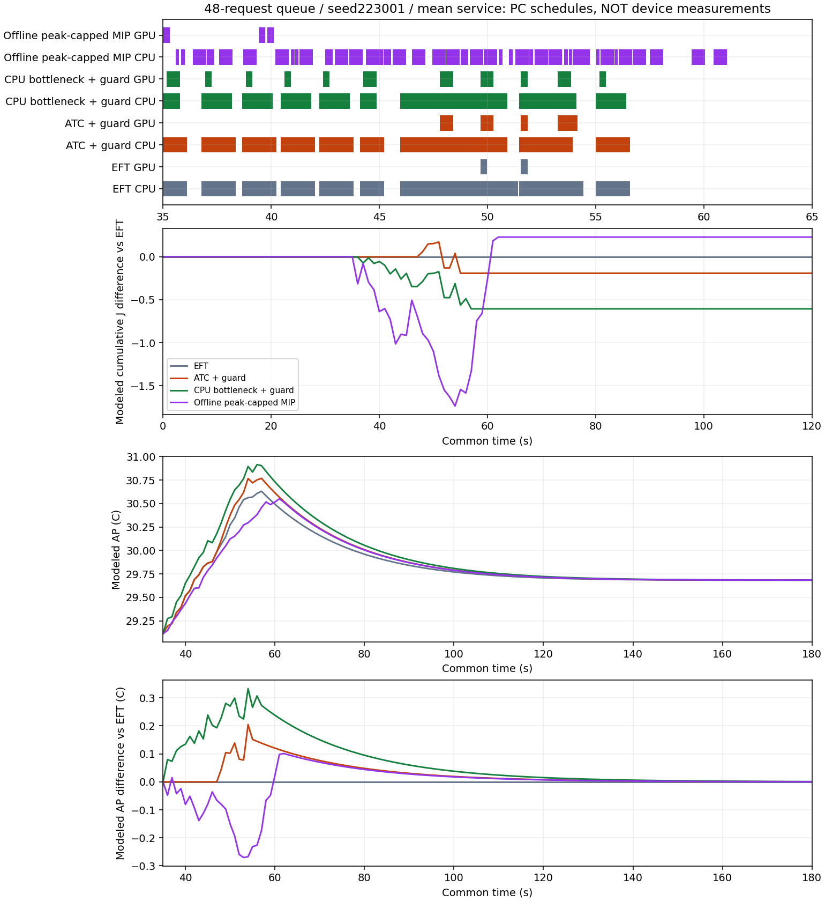

새 PC 계산 264건과 offline 일정 재생 8건입니다. 각 단계의 저장 EFT 24건을 재사용했습니다. 모든 입력은 48요청이며 동결 계수는 변경하지 않았습니다. 새 seed 확인은 소프트웨어 평가이며 독립 실기기 검증이 아닙니다.
2026-10-06 별도 후속: 최고 AP와 양의 AP면적을 함께 제한한4사례에서는 queue75 두 미래일정에 작은 공동 모형 이득이 있었습니다. 응답 증가·부호있는온도면적·미확인 실기기비용을 분리합니다. 아래 온라인후보/옛offline 결과를 덮어쓰지 않습니다.
| 입력 | 방법 | 기한 | 공동 비악화 | ΔJ | Δ최고AP | ΔAP면적 | Δ긴급P95 ms | Δ일반평균 ms |
|---|---|---|---|---|---|---|---|---|
| g1.2_c0.5_b1 | ATC_QUEUED_GUARD_V1 | 288/288 | 0/6 | +0.000000 | +0.000000 | +0.000000 | +0.000000 | +0.000000 |
| g1.2_c0.5_b1 | CPU_BOTTLENECK_GUARD_V1 | 288/288 | 0/6 | +0.000000 | +0.000000 | +0.000000 | +0.000000 | +0.000000 |
| g0.45_c0.5_b4 | ATC_QUEUED_GUARD_V1 | 288/288 | 0/6 | -0.279385 | +0.208772 | +5.696300 | +169.413099 | -118.477665 |
| g0.45_c0.5_b4 | CPU_BOTTLENECK_GUARD_V1 | 288/288 | 0/6 | -0.524165 | +0.276163 | +8.386175 | +233.817744 | -170.224968 |
| g0.15_c0.5_b8 | ATC_QUEUED_GUARD_V1 | 207/288 | 0/6 | -0.527904 | +0.216072 | +7.390286 | -1891.371480 | -1643.785014 |
| g0.15_c0.5_b8 | CPU_BOTTLENECK_GUARD_V1 | 217/288 | 0/6 | -0.685501 | +0.286765 | +9.865911 | -1642.610679 | -2162.691042 |
| g0.45_c0.75_b4 | ATC_QUEUED_GUARD_V1 | 288/288 | 0/6 | +0.000000 | +0.000000 | +0.000000 | +0.000000 | +0.000000 |
| g0.45_c0.75_b4 | CPU_BOTTLENECK_GUARD_V1 | 288/288 | 0/6 | -0.517496 | +0.215088 | +6.840822 | +0.000000 | -178.984298 |
v1은 현재 큐의 유예가 미래 요청의 여유를 소모해 기한 위반을 만들었습니다. v2는 사후 개발로 첫 행동을 즉시 배정으로 제한했습니다. v1의 새 seed는 323001/323002, v2는 423001/423002이며 서로를 같은 요청의 직접 대조로 해석하지 않습니다. 두 단계 모두 공동 비악화 사례 0건으로 기본 정책에 채택하지 않습니다.
| 단계 | 입력 | 방법 | 기한 | 공동 비악화 | ΔJ | Δ최고AP | ΔAP면적 | Δ긴급P95 ms | Δ일반평균 ms |
|---|---|---|---|---|---|---|---|---|---|
| beam_v1 | g1.2_c0.5_b1 | PARETO_BEAM_SERVICE_V1 | 288/288 | 0/6 | -0.367598 | +0.165328 | +6.355996 | +1228.831657 | +2762.686543 |
| beam_v1 | g0.45_c0.5_b4 | PARETO_BEAM_SERVICE_V1 | 257/288 | 0/6 | -0.160387 | +0.059640 | +2.686386 | +1237.149703 | +2878.156099 |
| beam_v1 | g0.15_c0.5_b8 | PARETO_BEAM_SERVICE_V1 | 180/288 | 0/6 | -0.011748 | +0.002659 | +0.143079 | +192.014659 | +211.768317 |
| beam_v1 | g0.45_c0.75_b4 | PARETO_BEAM_SERVICE_V1 | 283/288 | 0/6 | -0.066604 | +0.057601 | +1.077438 | +901.484621 | +1743.327132 |
| beam_v2 | g1.2_c0.5_b1 | PARETO_BEAM_IMMEDIATE_V2 | 288/288 | 0/6 | +0.000000 | +0.000000 | +0.000000 | +0.000000 | +0.000000 |
| beam_v2 | g0.45_c0.5_b4 | PARETO_BEAM_IMMEDIATE_V2 | 288/288 | 0/6 | +0.000000 | +0.000000 | +0.000000 | +0.000000 | +0.000000 |
| beam_v2 | g0.15_c0.5_b8 | PARETO_BEAM_IMMEDIATE_V2 | 158/288 | 0/6 | -0.104611 | +0.029095 | +1.311634 | -73.670508 | -389.269171 |
| beam_v2 | g0.45_c0.75_b4 | PARETO_BEAM_IMMEDIATE_V2 | 288/288 | 0/6 | +0.000000 | +0.000000 | +0.000000 | +0.000000 | +0.000000 |
20ms 격자의 혼합정수계획에서 보수적 점유를 계획하고 원래 5단계 이벤트 엔진으로 재생했습니다. gap은 격자 문제의 추가 전력 목적 gap입니다. 연속시간 최적성·실기기 효과를 증명하지 않으며 timeout incumbent를 최적해로 부르지 않습니다. J·최고 AP 동시 감소 사례도 AP 면적과 응답 비용을 별도 보고합니다.
| 입력 | seed | 목적/제약 | 상태 | 격자solver gap | 재생 ΔJ | 재생 Δ최고AP | 공동 비악화 |
|---|---|---|---|---|---|---|---|
| g0.45_c0.5_b4 | 223001 | min_J | replayed_incumbent | 0.0 | -0.8881703782130614 | 0.31520737692024525 | False |
| g0.45_c0.5_b4 | 223001 | min_J_under_EFT_peak | replayed_incumbent | 0.05361540832797028 | 0.22926922776167658 | -0.08047578730939975 | False |
| g0.45_c0.5_b4 | 223002 | min_J | replayed_incumbent | 0.023666321354287773 | -0.4526899089264589 | 0.417215739640195 | False |
| g0.45_c0.5_b4 | 223002 | min_J_under_EFT_peak | replayed_incumbent | 0.04042094698560288 | 0.2230194719255394 | -0.05303323623701672 | False |
| g0.45_c0.75_b4 | 223001 | min_J | replayed_incumbent | 0.00453472781471516 | -0.7325244586802171 | 0.3819223591458609 | False |
| g0.45_c0.75_b4 | 223001 | min_J_under_EFT_peak | replayed_incumbent | 0.0025214083795622195 | -0.30918467097282587 | -0.029244189365829953 | False |
| g0.45_c0.75_b4 | 223002 | min_J | replayed_incumbent | 0.0 | -0.6102035558634498 | 0.32560722002364173 | False |
| g0.45_c0.75_b4 | 223002 | min_J_under_EFT_peak | replayed_incumbent | 0.10990045907747675 | 0.6546210373984422 | -0.18138515087596474 | False |
평균 처리시간에서 분류 CPU 1건을 탐지 CPU와 완전히 겹치는 분류 GPU로 바꾸면 ΔJ=−0.043247J이지만 AP 가열 입력 적분은 +0.031437°C입니다. 이는 물리적 열량이 아닙니다. 같은 초기조건·g=0에서 무한 시간의 부호 있는 AP 차이 적분은 +0.736232°C·s입니다. 이를 유한창 최고 AP나 양의 부담 면적의 불가능 증명으로 바꾸지 않습니다.

queue 50%, seed223001, mean의 모형 그림이며 새 실측 그림이 아닙니다. 다른 seed 결과는 각자의 EFT와 대조합니다.
계약·한계·재현 · ATC/병목 · 큐 탐색 · 동결식 상충 경계 · 상태 점유 분해 · offline 참고 결과